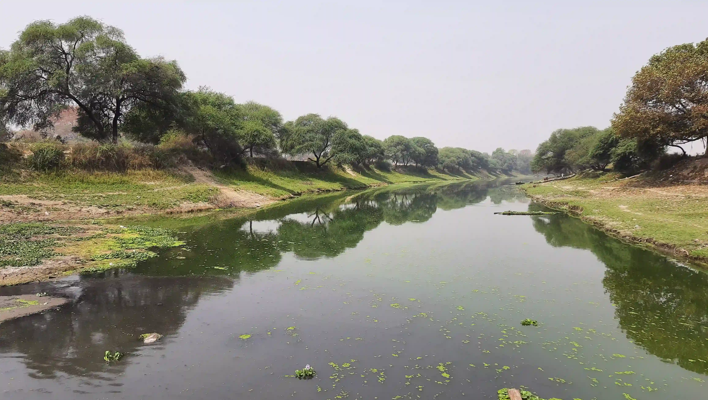
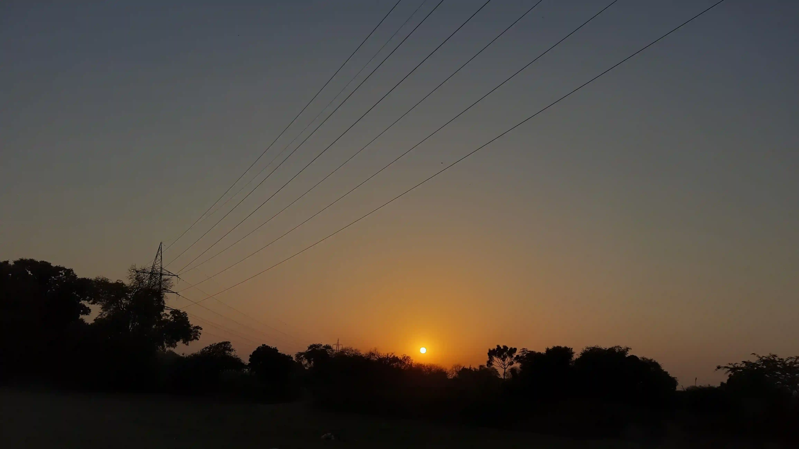

Industrial Pollution in Rivers: A Comprehensive Approach
A river in Varanasi affected by pollution likely from industrial sources, evident from the greenish tint and presence of floating debris. Industrial pollution in rivers is a significant environmental issue that can lead to water quality degradation, harm to aquatic life, and adverse health effects on nearby human populations.
Causes of River Pollution
Industrial Discharges: Factories and manufacturing plants often release untreated or inadequately treated wastewater directly into rivers.
Agricultural Runoff: Pesticides, fertilizers, and other chemicals used in agriculture can wash into rivers during rainfall.
Urban Runoff: Stormwater from urban areas can carry pollutants like oil, heavy metals, and chemicals into rivers.
Improper Waste Disposal: Dumping of solid waste and sewage into rivers.
Impacts of River Pollution
Environmental Impact:
Aquatic Life: Toxic substances can kill fish and other aquatic organisms.
Ecosystem Disruption: Pollutants can disrupt the natural balance of the river ecosystem.
Human Health:
Drinking Water Contamination: Polluted rivers can contaminate drinking water sources, leading to health issues.
Recreational Impact: Polluted water can cause skin diseases and other health problems for people using the river for recreation.
Economic Impact:
Fisheries: Decline in fish populations affects local fishing economies.
Tourism: Decreased water quality can reduce tourism activities.
Solutions to Fix River Pollution
Policy and Regulation:
Strict Enforcement: Governments need to enforce existing environmental laws strictly.
New Regulations: Implement new regulations that limit the amount of pollutants industries can release.
Treatment and Infrastructure:
Wastewater Treatment Plants: Construct and upgrade treatment plants to ensure wastewater is adequately treated before being discharged.
Green Infrastructure: Develop green infrastructure like wetlands and bio-retention systems to filter pollutants naturally.
Industrial Practices:
Cleaner Production Techniques: Encourage industries to adopt cleaner production techniques that reduce pollutant generation.
Effluent Treatment: Mandate industries to have effluent treatment plants and regularly monitor their discharge.
Community Engagement:
Awareness Campaigns: Educate the public and industries about the importance of clean water and proper waste disposal.
Community Monitoring: Involve local communities in monitoring water quality and reporting pollution.
Restoration Projects:
River Clean-up Drives: Organize regular clean-up drives to remove debris and pollutants.
Reforestation: Plant trees along riverbanks to reduce runoff and improve water quality.
Innovative Technologies:
Bioremediation: Use microorganisms to break down pollutants in the water.
Nanotechnology: Develop nanomaterials that can absorb or neutralize pollutants.
Case Studies and Examples:
The Thames River, UK: Once heavily polluted, the Thames has seen significant improvement due to strict regulations, effective treatment plants, and public awareness campaigns.
The Ganges River, India: Ongoing efforts like the Namami Gange program aim to clean and rejuvenate the river through a combination of infrastructure development, industrial regulation, and community involvement.
Conclusion:
Addressing river pollution requires a holistic approach that combines policy, technology, community engagement, and sustainable industrial practices. By implementing comprehensive strategies and ensuring strict enforcement, we can restore and protect our vital water resources for future generations.
Related Articles

Discover the various benefits trees provide to our ecosystem, from soil conservation to biodiversity.

sunflower, known for its large, yellow petals and distinctive central disk.

Learn why reforestation is crucial for our environment and how it helps combat global warming.